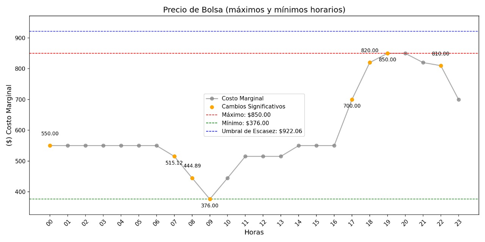

PRECIO BOLSA HORARIO

Automatización del Predespacho Ideal con Análisis del Costo Marginal

1. Introducción
El sistema desarrollado automatiza la descarga, procesamiento y análisis de los datos del Predespacho Ideal proporcionados por XM. Este análisis es fundamental para evaluar el comportamiento del mercado eléctrico, ya que los costos marginales y precios de oferta influyen directamente en la planificación y operación compañia. Mediante esta automatización, se garantiza una supervisión continua del mercado, lo que permite detectar tendencias, prevenir posibles riesgos y optimizar la toma de decisiones basada en datos actualizados y precisos. Esto es especialmente útil para operadores del mercado, generadores y entidades reguladoras que requieren información en tiempo real para la gestión eficiente de la demanda y oferta de energía.
¿Qué es el Predespacho Ideal?
El Predespacho Ideal contiene información sobre:
- El programa de generación para cada recurso disponible durante el día especificado (dd).
- Los precios de oferta del recurso denominado MPO en cada periodo del día.
Objetivo Principal
La finalidad de este script es obtener información esencial sobre el programa de generación y los precios de oferta de recursos del Predespacho Ideal. Además, se realiza un análisis detallado de los datos del costo marginal para identificar tendencias, valores clave y umbrales de escasez. Este análisis ayuda a tomar decisiones informadas en tiempo real dentro del contexto de la operación del sistema eléctrico.
Funcionalidades Principales
-
Descarga y Validación de Archivos:
-
El script busca automáticamente los archivos esperados, nombrados según el formato de fecha del día siguiente (
public_imar_nalMMDD.txtyiMARMMDD_NAL.txt). -
En caso de no encontrar los archivos en el sistema local, el script intenta obtenerlos mediante scraping desde al portal de XM. Para ésto se utiliza Selenium para navegar automáticamente al sitio web y descargar los archivos necesarios.
-
-
Procesamiento de Datos:
- Los archivos descargados son leídos para extraer los datos correspondientes al costo marginal, que se presentan en un formato delimitado por comas.
Costo Marginal",710110,640110,630110,630110,640110,710110,710110,710110,640110,630110,640110,710110,710110,710110,710110,710110,730003,730110,850110,910110,850110,750110,730003,710110
"Delta",110,110,110,110,110,110,110,110,110,110,110,110,110,110,110,110,110,110,110,110,110,110,110,110
"MPO",710000,640000,630000,630000,640000,710000,710000,710000,640000,630000,640000,710000,710000,710000,710000,710000,729893,730000,850000,910000,850000,750000,729893,710000
- Los datos extraídos son convertidos a una lista de valores numéricos para su análisis y visualización.
-
Análisis del Costo Marginal:
- Se realizan cálculos de máximos, mínimos y promedios del costo marginal.
- Se define un umbral de escasez, equivalente al 95% de un valor de referencia fijo (mes) (970.59), para identificar periodos críticos.
- Los valores que superan este umbral son clasificados y sus rangos son identificados.
-
Visualización Gráfica:
- El costo marginal es graficado con indicadores claros de los valores máximos, mínimos y aquellos cercanos al umbral de escasez.
- Cambios significativos en la serie son resaltados visualmente.
- La gráfica se guarda como un archivo de imagen para documentación y referencia.
-
Narrativa y Documentación:
- Se genera un archivo de texto que incluye una narrativa descriptiva del análisis realizado, destacando los valores más relevantes y los periodos críticos.
- Este archivo facilita la comunicación de los resultados a las partes interesadas.
-
Gestión de Errores y Reintentos:
- El sistema implementa un mecanismo de espera y reintento automático en caso de que los archivos no estén disponibles inicialmente.
- Este enfoque asegura la resiliencia y fiabilidad del proceso.
-
Notificación por Correo Electrónico:
- El sistema envía un correo electrónico al equipo de operaciones con los resultados del análisis en tiempo real.
- El correo incluye la gráfica del costo marginal y el reporte narrativo generado.
-
Configuración del correo:
import smtplib from email import encoders def enviar_correo(destinatario, asunto, cuerpo, archivo_adjunto): remitente = "tu_correo@example.com" password = "tu_contraseña" -
Ejemplo:
Importancia Operativa
Este sistema es esencial para la operación eficiente y confiable del mercado eléctrico, ya que proporciona:
- Información en Tiempo Real: Los datos procesados permiten ajustar decisiones operativas según las condiciones del mercado.
2. Descripción General del Sistema
El sistema está compuesto por dos módulos principales:
marginal.py(Principal): Responsable de procesar los datos descargados, analizar los costos marginales y generar gráficos y reportes detallados.predespacho_ideal.py: Módulo auxiliar encargado de realizar la descarga automática de los datos desde el portal de XM mediante Selenium.
3. Configuración Inicial
3.1 Requisitos del Sistema
Para utilizar este sistema, es necesario contar con:
- Python 3.8 o superior.
- Librerías requeridas:
pip install selenium matplotlib pandas webdriver-manager - Google Chrome instalado y actualizado.
3.2 Configuración de Selenium
El sistema utiliza Selenium en modo headless para realizar las descargas:
- Carpeta de destino:
C:\Users\<usuario>\OneDrive - GEAM\Operaciones GEAM\Operaciones\Despacho\ - Configuración adicional del navegador:
El navegador está configurado para descargar automáticamente los archivos sin intervención del usuario.
3.3 Estructura del Proyecto
El sistema debe organizarse como sigue:
/marginal.py
/predespacho_ideal.py
- Gráficos y reportes: Se almacenan en la carpeta designada.
4. Descripción Detallada de los Módulos
4.1 marginal.py
Este es el módulo principal que ejecuta el flujo completo del sistema. Sus principales tareas incluyen:
- Llamar a
predespacho_ideal.pypara descargar los datos. - Analizar la información del costo marginal.
- Generar gráficos y reportes narrativos.
Funciones Clave:
Función graficar_costo_marginal(costo_marginal_nuevo)
Analiza y visualiza los costos marginales.
- Cálculos realizados:
- Máximos, mínimos y promedios del costo marginal.
- Identificación de valores que exceden el umbral de escasez (95% de 951.76).
- Salida:
- Una gráfica que resalta valores significativos.
- Una narrativa descriptiva con resultados clave.
Fragmento Relevante:
umbral_escasez = escasez * 0.95
valores_sobre_umbral = [i for i, valor in enumerate(costo_marginal_dividido) if valor > umbral_escasez]
plt.axhline(y=umbral_escasez, color='blue', linestyle='--', label=f'Umbral de Escasez: ${umbral_escasez:,.2f}')
Función esperar(tiempo, intento)
Gestiona los temporizadores en caso de que los archivos no estén disponibles.
Fragmento Relevante:
for i in range(tiempo, 0, -1):
print(f"Esperando {i}s... Intento {intento}", end='\r')
time.sleep(1)
Interacción con predespacho_ideal.py
El módulo llama a la función ejecutar() para descargar los archivos necesarios.
4.2 predespacho_ideal.py
Este módulo utiliza Selenium para interactuar con el portal de XM y descargar los datos del Predespacho Ideal.
Funciones Clave:
Función ejecutar()
Descarga los archivos requeridos desde el portal de XM:
- Navega al sitio correspondiente.
- Identifica dinámicamente el archivo deseado.
- Realiza la descarga y lo guarda en la carpeta designada.
Fragmento Relevante:
driver.get("https://www.xm.com.co/corto-plazo/despacho-energia/predespacho-ideal")
button_element.click()
Función continuar_proceso(driver)
Procesa el contenido de la página web y convierte el texto CSV en datos tabulares utilizables.
5. Flujo de Operación
-
Ejecutar
marginal.py:python marginal.py -
Descarga de Archivos:
- El sistema navega automáticamente al portal de XM.
- Identifica y descarga los archivos relacionados con el día siguiente.
-
Análisis de los Datos:
- Se procesan los costos marginales.
- Se genera una gráfica y un reporte narrativo.
-
Resultados Generados:
- Gráfica del Costo Marginal:
C:\Users\<usuario>\OneDrive - GEAM\Operaciones GEAM\Operaciones\Despacho\pbolsahorario_image.png - Reporte Narrativo:
C:\Users\<usuario>\OneDrive - GEAM\Operaciones GEAM\Operaciones\Despacho\pbolsahorario_texto.txt
- Gráfica del Costo Marginal:
Diagrama de flujo de procesos
graph TD
A[Inicia Ejecución del Script] --> B[Verifica Archivos Locales]
B -->|Archivos Disponibles| C[Procesa Datos]
B -->|Archivos No Disponibles| D[Descarga Archivos del Portal XM]
D --> E[Valida Archivos Descargados]
E -->|Validación Exitosa| C
E -->|Error en la Validación| F[Reintenta Descarga]
F --> D
C --> G[Realiza Cálculos del Costo Marginal]
G --> J[Genera Gráfica de Resultados]
G --> K[Genera Narrativa de Resultados]
J --> L[Finaliza Proceso]
K --> LEste diagrama representa el flujo del sistema para la automatización del Predespacho Ideal, desde la ejecución del script hasta la generación de gráficos y reportes narrativos. Cada paso incluye validaciones y reintentos automáticos en caso de errores.
6. Solución de Problemas
-
El sistema no descarga los archivos:
- Verifica que el sitio web de XM esté accesible.
- Revisa los permisos de la carpeta de destino.
-
Errores con Selenium:
- Asegúrate de tener instalada la última versión de ChromeDriver:
pip install webdriver-manager
- Asegúrate de tener instalada la última versión de ChromeDriver:
-
Los datos están incompletos o no se procesan correctamente:
- Confirma que los archivos descargados contengan la información esperada.
Conclusión
Este sistema de scraping y análisis del Predespacho Ideal es una herramienta poderosa para los operadores del mercado eléctrico. No solo automatiza procesos críticos, sino que también ofrece un análisis profundo y visual de los datos más relevantes, asegurando decisiones informadas en un entorno altamente regulado. Este enfoque resalta la importancia de la digitalización y automatización en la gestión moderna de sistemas eléctricos.